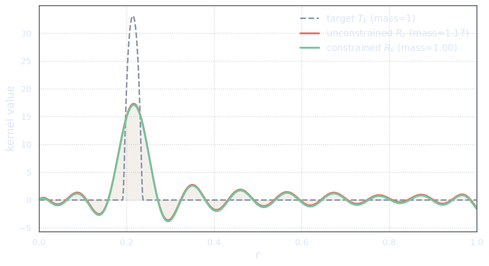
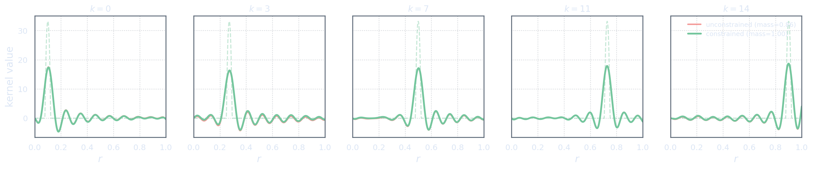

Why Area One Matters
Averages are calibrated linear functionals
In the previous act, we saw the basic SOLA mechanism. A weighted sum of data produces a resolving kernel: \[R(r) = \sum_{i=1}^{N_d}x_iK_i(r),\] and the corresponding data combination is \[\sum_{i=1}^{N_d}x_i[\mathbf d]_i = \int_\Omega R(r)m(r)\dd r.\] The natural goal was to choose \(\mathbf x\) so that \(R\) resembles the target kernel \(T\).
But if the target is meant to represent an average, shape is not the whole story. An average must also have the right scale.
Suppose \(T\) is a localized averaging kernel. Then it should satisfy \[\int_\Omega T(r)\dd r=1.\] This condition makes the associated property \[[\mathbf p]_1 = \int_\Omega T(r)m(r)\dd r\] a genuine weighted average.
To see why, test the target against a constant model. If \(m(r)=c\), then \[[\mathbf p]_1 = \int_\Omega T(r)c\dd r = c\int_\Omega T(r)\dd r = c.\] So a unit-mass target kernel reproduces constants correctly. That is what an average should do.
If instead \(\int_\Omega T(r)\dd r=2,\) then the same constant model would give \([\mathbf p]_1=2c.\) The kernel may still be localized, smooth, and visually reasonable, but it is no longer an averaging kernel. It has the wrong calibration.
Averaging is not only about where the kernel is located. It is also about how much total weight the kernel carries. The location tells us where we are looking. The mass tells us whether the answer is on the right scale.
For several localized averages, we choose target kernels \(T_1,\dots,T_{N_p}\) with \[\int_\Omega T_k(r)\dd r=1, \qquad k=1,\dots,N_p.\] The property vector is then \(\mathbf p=\Tau(m)\in\Pspace,\) with components \[[\mathbf p]_k = \int_\Omega T_k(r)m(r)\dd r, \qquad k=1,\dots,N_p.\] Each component is intended to be a localized average of the same model, perhaps centred at a different location.
A localized averaging kernel must do two things: it must localize the model, and it must reproduce constants correctly. The second requirement is the unit-mass condition.
The resolving kernel may have the wrong mass
Now return to the resolving kernel \[R(r) = \sum_{i=1}^{N_d}x_iK_i(r).\] Even if \(R\) looks similar to the target kernel \(T\), it need not have the same total mass.
Its integral is \[\int_\Omega R(r)\dd r = \int_\Omega \sum_{i=1}^{N_d}x_iK_i(r)\dd r.\] By linearity, \[\int_\Omega R(r)\dd r = \sum_{i=1}^{N_d} x_i \int_\Omega K_i(r)\dd r.\] So the mass of the resolving kernel is controlled by the same data weights \(x_i\), but through the integrals of the sensitivity kernels.
There is no automatic reason for this quantity to equal one: \[\sum_{i=1}^{N_d} x_i \int_\Omega K_i(r)\dd r \neq 1\] in general.
This matters because the SOLA output associated with \(R\) is \[\sum_{i=1}^{N_d}x_i[\mathbf d]_i = \int_\Omega R(r)m(r)\dd r.\] If \(R\) is supposed to be interpreted as an averaging kernel, then it should act correctly on constant models. For \(m(r)=c\), \[\int_\Omega R(r)c\dd r = c\int_\Omega R(r)\dd r.\] Thus the result equals \(c\) only if \(\int_\Omega R(r)\dd r=1.\)
A kernel can have a plausible shape but the wrong total mass. Then it is not the average we meant to ask for.
This is an easy issue to miss visually. Two kernels may appear to sit in the same region, have similar widths, and even have similar oscillations, while still carrying different total mass. A plot can make them look like siblings. The constant-model test reveals whether they are doing the same averaging job.

For multiple properties, the same issue appears component by component. If the approximate property map is \(\mathcal{A}:=\mathbf XG:\M\to\Pspace,\) then the \(k\)th resolving kernel is \[R_k(r) = \sum_{i=1}^{N_d}[\mathbf X]_{ki}K_i(r).\] For this resolving kernel to define an average, we need \[\int_\Omega R_k(r)\dd r=1, \qquad k=1,\dots,N_p.\]
Unimodularity
The condition
\[\int_\Omega R(r)\dd r=1\] statistically inclined? tap ➤This is often called a unimodularity condition. The word sounds slightly complicated, but the idea is simple: the resolving kernel should have unit mass. The condition is as old as the method: Backus and Gilbert imposed unit area on their averaging kernels from the start [BG68], and SOLA carries it as the standing constraint [PT92].
For one average, unimodularity says \[\int_\Omega \sum_{i=1}^{N_d}x_iK_i(r)\dd r = 1.\] Equivalently, \[\sum_{i=1}^{N_d} x_i \int_\Omega K_i(r)\dd r = 1.\]
For many averages, each resolving kernel should have unit mass: \[\int_\Omega R_k(r)\dd r=1, \qquad k=1,\dots,N_p.\]
Unimodularity is the constant-model test. If the true model is flat, an averaging kernel should return the flat value. Unit mass is what makes that happen.
This condition does not guarantee that the resolving kernel equals the target kernel. It does not guarantee perfect localization. It does not remove the limitations imposed by the span of the sensitivity kernels.
But it does enforce a basic calibration. If the output is going to be called an average, then the resolving kernel should at least behave like an average on constants.
In Act II we asked for shape: make the resolving kernel look like the target. In Act III we add calibration: make the resolving kernel carry the right total mass.
Constrained SOLA for Averages
The average vector
We now translate unimodularity into operator notation.
Let \(1_\Omega\in\M\) denote the constant function with value one: \[1_\Omega(r)=1, \qquad r\in\Omega.\] Applying the forward map \(G\) to this constant function gives a finite-dimensional vector in the data space: \[\mathbf v:=G(1_\Omega)\in\D.\] Its components are \[[\mathbf v]_i = \int_\Omega K_i(r)\dd r, \qquad i=1,\dots,N_d.\] So \(\mathbf v\) records the total mass of each sensitivity kernel.
This vector is useful because the mass of any resolving kernel can be written using it. For one set of weights \(\mathbf x\), \[R(r) = \sum_{i=1}^{N_d}x_iK_i(r),\] and therefore \[\int_\Omega R(r)\dd r = \sum_{i=1}^{N_d}x_i[\mathbf v]_i.\] In Euclidean notation this is \[\int_\Omega R(r)\dd r = \mathbf x^\top\mathbf v.\]
For multiple properties, the SOLA matrix \(\mathbf X:\D\to\Pspace\) has rows containing the weights for each property. The \(k\)th resolving kernel is \[R_k(r) = \sum_{i=1}^{N_d}[\mathbf X]_{ki}K_i(r),\] so its mass is \[\int_\Omega R_k(r)\dd r = \sum_{i=1}^{N_d}[\mathbf X]_{ki}[\mathbf v]_i.\] But the right-hand side is exactly the \(k\)th component of \(\mathbf X\mathbf v\): \[\int_\Omega R_k(r)\dd r = [\mathbf X\mathbf v]_k.\]
The vector \(\mathbf v=G(1_\Omega)\) lets us test the total mass of resolving kernels using only data-space algebra.
This is a pleasant little piece of bookkeeping. Instead of writing one integral constraint for each resolving kernel, we can write a single finite-dimensional vector constraint.
The constraint \(\mathbf X\mathbf v=\mathbf w\)
For \(N_p\) averaging targets, we want each resolving kernel to have unit mass: \[\int_\Omega R_k(r)\dd r=1, \qquad k=1,\dots,N_p.\] Using the average vector \(\mathbf v\), this becomes \[[\mathbf X\mathbf v]_k=1, \qquad k=1,\dots,N_p.\]
Define the desired mass vector \(\mathbf w\in\Pspace\) by \([\mathbf w]_k=1,\; k=1,\dots,N_p.\) Then all unimodularity constraints can be written compactly as \[\mathbf X\mathbf v=\mathbf w.\]
This is the constrained SOLA condition for averages.
The operator \(G:\M\to\D\) is lightface because it acts on the model function space. The vector \(\mathbf v=G(1_\Omega)\) is bold because it is a finite-dimensional data-space object. The matrix \(\mathbf X:\D\to\Pspace\) is bold because it is a finite-dimensional map between Euclidean representation spaces. The vector \(\mathbf w\) is bold because it is a finite-dimensional property-space object.
The constraint \(\mathbf X\mathbf v=\mathbf w\) has a clean interpretation: \[\text{constant model} \quad\longmapsto\quad \text{constant average}.\]
Indeed, if \(m=c1_\Omega\), then \[G(m)=G(c1_\Omega)=cG(1_\Omega)=c\mathbf v.\] Applying the SOLA matrix gives \[\mathbf XG(m)=\mathbf X(c\mathbf v)=c\mathbf X\mathbf v.\] If \(\mathbf X\mathbf v=\mathbf w\), and \([\mathbf w]_k=1\), then \[[\mathbf XG(m)]_k=c, \qquad k=1,\dots,N_p.\] So each reported average reproduces constants correctly.
Unimodularity is not an abstract extra condition. It says that SOLA averages should return the right answer when the model is constant.
The constrained minimization problem
We now add this constraint to the noiseless SOLA problem.
The unconstrained problem was \[\mathbf X_0 = \argmin_{\mathbf X} \left\| \Tau-\mathbf XG \right\|_{\HS}^2.\] For averaging targets, we instead solve \[\mathbf X_c = \argmin_{\mathbf X} \left\| \Tau-\mathbf XG \right\|_{\HS}^2 \quad \text{subject to} \quad \mathbf X\mathbf v=\mathbf w.\] The subscript \(c\) is for calibrated: this is the corrected solution that Act 2’s uncorrected \(\mathbf X_0\) was waiting for.
This says: match the target kernels as well as possible, but only among data combinations whose resolving kernels have the correct total mass.
The constraint may force a slightly worse target fit than the unconstrained solution. That is the price of calibration. If the unconstrained resolving kernels already have unit mass, then nothing changes. But if they do not, the constrained solution adjusts the weights.
The unconstrained solution says: “give me the closest shape.” The constrained solution says: “give me the closest shape among kernels that are actually averages.”
The adjustment is surprisingly simple. It is a rank-one correction to the unconstrained solution.
Closed-form correction
Let \[\mathbf X_0 = \Tau G^*(GG^*)^{-1}\] be the noiseless unconstrained solution, assuming \(GG^*\) is invertible on \(\D\).
Define \[\mathbf u := (GG^*)^{-1}\mathbf v \in\D,\] and \[\beta := (\mathbf v,\mathbf u)_{\D}.\] Equivalently, \[\beta = (\mathbf v,(GG^*)^{-1}\mathbf v)_{\D}.\] Assuming \(\mathbf v\neq \mathbf 0\), we have \(\beta>0\).
The constrained solution is \[\mathbf X_c = \mathbf X_0 - \frac{\mathbf X_0\mathbf v-\mathbf w}{\beta} \mathbf u^*.\] Here \(\frac{\mathbf X_0\mathbf v-\mathbf w}{\beta} \mathbf u^*\) is a rank-one map from \(\D\) to \(\Pspace\). It takes a data-space vector, tests it against \(\mathbf u\), and returns a property-space correction in the direction \(\mathbf X_0\mathbf v-\mathbf w.\)
Let us check that the constraint is satisfied. Applying \(\mathbf X_c\) to \(\mathbf v\) gives \[\mathbf X_c\mathbf v = \mathbf X_0\mathbf v - \frac{\mathbf X_0\mathbf v-\mathbf w}{\beta} \mathbf u^*\mathbf v.\] Since \[\mathbf u^*\mathbf v = (\mathbf u,\mathbf v)_{\D} = \beta,\] we obtain \[\mathbf X_c\mathbf v = \mathbf X_0\mathbf v - (\mathbf X_0\mathbf v-\mathbf w) = \mathbf w.\] So the correction does exactly what it should.
One way to derive the formula is to introduce a Lagrange multiplier \(\boldsymbol\lambda\in\Pspace\) and solve \[\mathbf X_c = \argmin_{\mathbf X} \left\| \Tau-\mathbf XG \right\|_{\HS}^2 \quad \text{subject to} \quad \mathbf X\mathbf v=\mathbf w.\] The stationarity equation has the form \[(\Tau-\mathbf XG)G^* = \boldsymbol\lambda\mathbf v^*.\] Solving this equation gives the unconstrained SOLA operator plus a rank-one term. The multiplier is then chosen so that \(\mathbf X_c\mathbf v=\mathbf w\), producing the formula above.
The formula is useful because it shows how constrained SOLA differs from unconstrained SOLA. It does not rebuild the whole solution from scratch. It corrects the unconstrained map by the smallest adjustment needed to enforce the average condition.
At the kernel level, the correction modifies each resolving kernel just enough to give it unit mass. In components, \[R_k(r) = \sum_{i=1}^{N_d}[\mathbf X_c]_{ki}K_i(r),\] and the constraint ensures \[\int_\Omega R_k(r)\dd r = [\mathbf X_c\mathbf v]_k = [\mathbf w]_k = 1.\]

For averages, normalization is not decoration. It is part of the meaning of the estimate.
This closes the average-only story. We now know how to ask SOLA for localized averages, and we know how to enforce the basic calibration that makes those averages meaningful.
But not every property is an average. Some targets represent gradients, contrasts, coefficients, or more specialized linear diagnostics. Once we leave averages, the word “unimodularity” is no longer broad enough. The next act replaces it with the more general idea of a resolving constraint.
References
- George Backus and Freeman Gilbert (1968). “The Resolving Power of Gross Earth Data.” Geophysical Journal of the Royal Astronomical Society 16(2), 169–205. Unit-area averaging kernels in the original method. doi:10.1111/j.1365-246X.1968.tb00216.x
- Frank P. Pijpers and Michael J. Thompson (1992). “Faster formulations of the optimally localized averages method for helioseismic inversions.” Astronomy & Astrophysics 262, L33–L36. The paper that coined SOLA. SOLA with the unimodularity constraint carried along (their eq. 4). ADS · free scan (ADS)